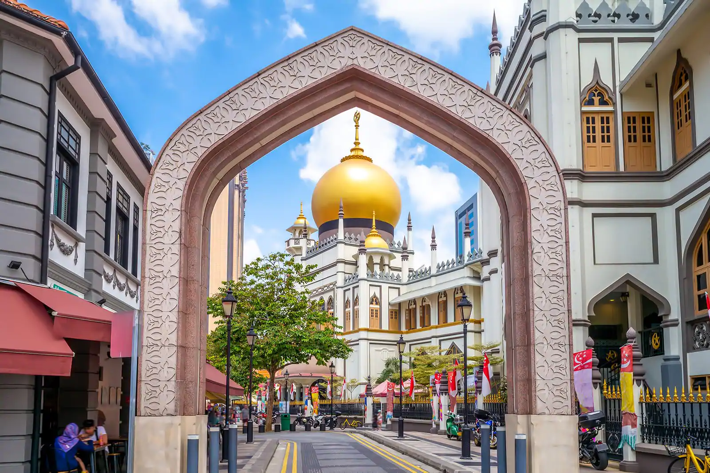

Haji Lane is in the Kampong Glam neighbourhood of Singapore.
Kampong Glam was once the seat of Malay royalty in a traditionally Malay urban residential area that stretched from Rochor Road to the banks of the Kallang River. The streets features mostly two-storey shophouses of the Early and Transitional styles.
THE BUILDINGS
Haji Lane is an inconspicuous lane, lined with first-generation shop houses only several metres wide located in Kampong Glam.
In nineteen century, Kampong glam served as boarding houses for poor Malay families and provided pilgrims a roof over their head. Haji Lane was named with its reference to Islam. The name ‘haji’ was an indication of the return of pilgrims who stayed at Haji Lane’s shophouses from their annual pilgrimage to Mecca (the hajj).It was known as the Muslim Quarter due to the strong presence of Muslim community.

Later, the British Empire took over and most Malay families were displaced. Arabs, Chinese, and Indians families started settling in Kampong Glam. However, Kampong Glam remained a place where many will visit to purchase Arab-Muslim traditional foodstuff and merchandise.
THE LEGACY
Kampong Glam was gazetted as a conservation area on 7 July 1989.
Over the second half of the 20th century, Haji Lane was transformed from a depressing row of shop houses mostly used as warehouse space to a funky trendy street filled with nail parlours, cafes, individualistic boutiques and graffiti-covered walls.
Today, Haji Lane has become a place of interest which is often patronised by locals and foreign visitors.